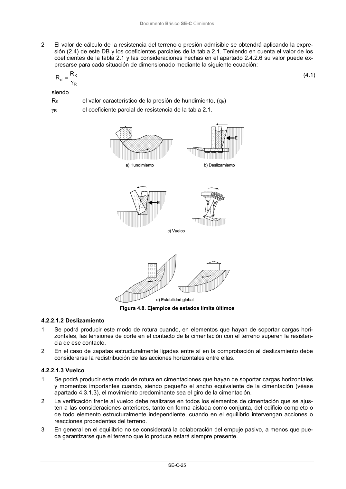

DB-SE-C Cimientos · edición 2019-12-20 · capa oficial
Documento DB-SE-C-oficial · SHA-256 del PDF a71133f4b0dca253e45ea3071c70f2a512354bcc5cd841bf89b1a502f567ac5e
Copia fiel del PDF fuente · Fuente oficial
Ficha de la disposición en la fuente oficial
Formatos: JSON del segmento · Markdown
4.2.2.1.2 Deslizamiento 1 Se podrá producir este modo de rotura cuando, en elementos que hayan de soportar cargas hori- zontales, las tensiones de corte en el contacto de la cimentación con el terreno superen la resisten- cia de ese contacto. 2 En el caso de zapatas estructuralmente ligadas entre sí en la comprobación al deslizamiento debe considerarse la redistribución de las acciones horizontales entre ellas.
